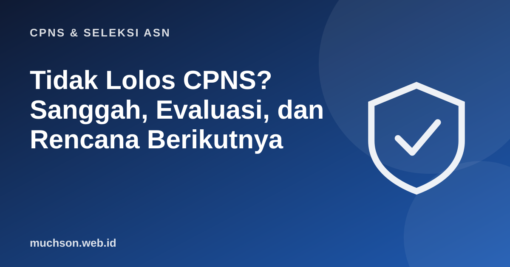

Beranda › Artikel › CPNS & Seleksi ASN
CPNS & Seleksi ASNTidak Lolos CPNS? Sanggah, Evaluasi, dan Rencana Berikutnya
Sebagian besar pelamar tidak lolos pada percobaan pertama, dan itu normal karena persaingan berbasis peringkat. Yang membedakan adalah apa yang dilakukan setelahnya: memeriksa apakah ada hak sanggah, mendiagnosis di tahap mana langkah terhenti, lalu menyusun rencana yang spesifik. Berikut panduannya, berdasarkan teks resmi PermenPANRB 6/2024.

Langkah 1: pastikan dulu statusnya, jangan langsung menyerah
Sebelum menyimpulkan gagal, periksa pengumuman hasil di SSCASN dan kanal resmi instansi. Hasil seleksi administrasi diumumkan terbuka (Pasal 28 ayat 3), hasil SKD diumumkan instansi (Pasal 31 ayat 3), dan hasil akhir diumumkan PPK secara terbuka (Pasal 51 ayat 1). Catat tahap tempat Anda berhenti karena tindakan lanjutannya berbeda.
Deskripsi teks diagram
- Tidak lulus administrasi: dokumen tidak memenuhi syarat
- Tidak lulus SKD: di bawah ambang batas atau di luar peringkat
- Tidak lulus akhir: nilai SKD + SKB belum cukup
- Cek hak sanggah: hanya bila ada kesalahan bukan dari Anda
- Evaluasi dan rencana: perbaiki bagian yang lemah
Langkah 2: manfaatkan masa sanggah jika ada dasarnya
Masa sanggah singkat dan hanya efektif untuk kesalahan yang bukan berasal dari pelamar. Pasal 29 dan Pasal 53 mengaturnya: pelamar dapat mengajukan sanggahan paling lama 3 hari kalender sejak hasil diumumkan, melalui SSCASN. Panitia dapat menerima alasan sanggahan jika kesalahan bukan berasal dari pelamar, dan menolaknya jika kesalahan berasal dari pelamar. Bila diterima, hasil diumumkan ulang paling lama 7 hari kalender sejak masa sanggah berakhir; untuk hasil akhir, perubahan harus disetujui ketua Panselnas.
| Tahap | Dasar sanggah | Batas waktu | Pengajuan |
|---|---|---|---|
| Seleksi administrasi | Pasal 29 | 3 hari kalender sejak hasil diumumkan | Melalui SSCASN |
| Hasil akhir seleksi | Pasal 53 | 3 hari kalender sejak hasil akhir diumumkan | Melalui SSCASN |
Sebagai catatan sejarah, pada seleksi CPNS 2019 BKN menyebut sanggahan hanya dapat dilakukan satu kali dan instansi diberi waktu menjawab dalam 4 hari (Siaran Pers 048/RILIS/BKN/X/2020, berdasarkan aturan teknis saat itu). Gunakan ketentuan PermenPANRB 6/2024 dan pengumuman seleksi yang berlaku, bukan aturan lama.
Pembatalan hasil seleksi juga mungkin terjadi pada tingkat penyelenggaraan: Panselnas dapat membatalkan hasil jika penyelenggaraan tidak sesuai pedoman, dan instansi dapat menyelenggarakan seleksi ulang dengan persetujuan Menteri (Pasal 52).
Langkah 3: diagnosis berdasarkan angka
Jika Anda berhenti di SKD, bandingkan skor per subtes dengan ambang batas. Ambang batas berlaku per subtes, bukan nilai total, jadi cari subtes yang paling jauh di bawah. Rujukan terakhir untuk formasi umum CPNS: TWK 65, TIU 80, TKP 166.
Langkah 4: rencana yang spesifik, bukan sekadar "belajar lebih giat"
- Tulis angka Anda. Skor per subtes dari hasil terakhir atau tryout terbaru.
- Tentukan satu target per subtes. Misalnya naik 10 poin pada TKP dalam enam minggu.
- Pilih metode yang terbukti. Uji diri dengan soal dan jeda antarsesi lebih efektif daripada membaca ulang (lihat rencana belajar 30, 60, dan 90 hari).
- Ukur tiap dua minggu. Tryout bertimer dengan rapor per subtes.
- Pantau pengumuman. Jadwal dan aturan bisa berubah tiap tahun anggaran.
Untuk mengukur titik awal, ambil tryout SKD gratis di LolosSeleksi. Rapor PDF-nya menunjukkan subtes yang masih di bawah ambang batas dan bab yang perlu diprioritaskan.
Jangan tergoda "jalur belakang" setelah gagal. Pelamar yang membantu atau melakukan kecurangan dinyatakan gugur dan tidak boleh melamar penerimaan ASN (Pasal 50 ayat 2).
Tanya jawab
Berapa lama masa sanggah CPNS?
Apakah semua sanggahan diterima?
Apa yang terjadi bila sanggah diterima?
Apakah nilai SKD tahun lalu bisa dipakai lagi?
Apa langkah paling efektif setelah gagal SKD?
Referensi
- Peraturan Menteri PANRB Nomor 6 Tahun 2024 tentang Pengadaan Pegawai ASN (teks resmi, BKN) (membuka tab baru)
- Peraturan Menteri PANRB 6/2024, status berlaku dan mencabut Permen 27/2021 (peraturan.bpk.go.id) (membuka tab baru)
- Siaran Pers BKN Nomor 048/RILIS/BKN/X/2020: ketentuan pemberkasan peserta lulus CPNS 2019 (membuka tab baru)
- Dunlosky dkk. (2013), Improving Students' Learning With Effective Learning Techniques, Psychological Science in the Public Interest 14(1) (membuka tab baru)